What Makes WindClan Special
If you've read the Warrior Cats books, you know WindClan isn't like the other clans. They don't hide in thick forests or swim in rivers. They run. Open moorland stretches for miles in every direction, and a WindClan cat can cover that ground faster than any other warrior in the forest. Speed isn't just an advantage for them - it's who they are.
WindClan cats are lean, tough, and stubbornly independent. They've been driven from their territory more than once, betrayed by allies, and underestimated by everyone. But they always come back. There's something about the open sky and the rolling hills that breeds resilience. A WindClan warrior doesn't need thick brambles for protection. They've got their own four paws and the wind at their backs.
Meet the Legendary WindClan Warrior Cats
WindClan has produced some of the most unforgettable cats in the entire Warrior Cats universe. From ancient founders who shaped the clans to modern warriors who fought through the darkest times, these cats proved that speed and heart can overcome any obstacle. Click on any warrior below to dive deeper into their story.
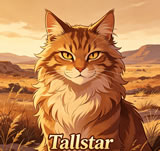

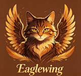
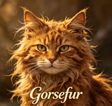
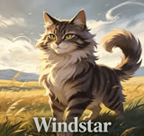
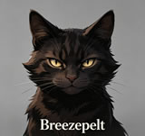
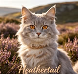

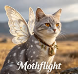
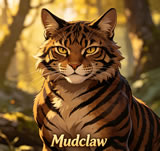
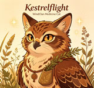
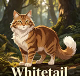
WindClan Warrior Cats - Character Deep Dives
🌪️ Tallstar - The Leader Who Chose Forgiveness
Tallstar's story hits different from most WindClan leaders. He didn't start out as some noble, wise cat. He started out angry. His father was killed by a ShadowClan warrior named Sparrow, and young Tallpaw wanted revenge so badly he could taste it. He trained harder than anyone. He pushed himself to the limit. All so he could one day kill the cat who destroyed his family.
But here's the thing about Tallstar - he grew. Somewhere along the journey, he realized that revenge wouldn't bring his father back. That carrying that hatred was destroying him more than it was destroying Sparrow. When he finally had the chance for vengeance, he walked away. That choice - choosing peace over blood - is what made him one of the greatest leaders in WindClan history. Under his leadership, WindClan formed a genuine friendship with ThunderClan, something that would've been unthinkable for most moorland cats. Read Tallstar's full story →
🐦⬛ Crowpaw - The Sharp-Tongued Hero
Crowpaw was a nightmare to deal with. Sarcastic, defensive, always ready with a cutting remark that could slice through fur. When he got chosen for the journey to the sun-drown place, nobody thought he'd make it. He argued with everyone. He complained about everything. He acted like the whole quest was beneath him.
But Crowpaw had layers. Under all that attitude was a cat who cared deeply about doing the right thing. He proved his courage again and again on that journey, facing dangers that would've broken lesser warriors. When he returned and earned his warrior name - Crowfeather - it wasn't just a promotion. It was recognition that he'd finally become the cat he was always meant to be. His later relationships with Leafpool and Nightcloud showed that even the prickliest cats need connection. Explore Crowpaw's journey →
🌬️ Windstar - The Cat Who Started It All
Before there were clans, there was Wind. A wiry, fierce she-cat who refused to let anyone push her around. She lived in the time of the early settlers, when cats were just figuring out that living in groups might be better than going it alone. Wind wasn't the biggest or the strongest, but she was fast. Faster than anyone. And she was determined. When the mountains got too dangerous, she led her cats to the forest. When other groups tried to claim the moorland, she fought them off.
Windstar's legacy isn't just that she founded WindClan. It's that she proved speed and determination could beat size and strength every single time. Every WindClan cat who runs across the moor is following in her pawsteps. Discover Windstar's origin →
💨 Breezepelt - The Cat Who Chose the Wrong Path
Breezepelt's story is basically a tragedy from start to finish. Born to Crowfeather and Nightcloud, he never felt wanted. Crowfeather was still hung up on Leafpool. Nightcloud was trying to prove something by having a kit. Breezepelt grew up knowing he was second best to everyone, and that kind of rejection leaves scars.
So when the Dark Forest offered him power and belonging, he took it. Can't really blame him, honestly. Every cat needs to feel like they matter somewhere. Breezepelt's betrayal of the clans during the Great Battle was unforgivable, but his reasons were painfully human. He wasn't evil - he was broken. And broken things sometimes do terrible things. Read Breezepelt's tragic story →
🌿 Heathertail - The She-Cat Who Deserved Better
Heathertail's biggest crime was falling for the wrong cat at the wrong time. She and Lionpaw were adorable together - two apprentices from different clans who found a secret tunnel system and turned it into their private meeting place. It was innocent. It was sweet. And it was doomed from the start.
When their relationship got discovered, Heathertail paid a heavier price than Lionpaw ever did. She had to watch the cat she loved become her enemy. She had to fight against him in border skirmishes. She had to pretend she didn't care while her heart broke every time she saw him. Heathertail's story is a reminder that in the warrior code, love doesn't always win. Explore Heathertail's story →
⭐ Onestar - From Friend to Foe
Onestar and Firestar used to be friends. Actual friends. When WindClan got driven out by ShadowClan and RiverClan, Fireheart was the one who helped bring them back. Onewhisker and Fireheart had a bond that crossed clan lines, built on mutual respect and genuine liking.
Then Onewhisker became Onestar, and everything changed. He started distancing himself from ThunderClan. He picked fights that didn't need to happen. He turned into the kind of leader who valued pride over everything else, including the friendship that had once meant so much. Some fans never forgave him for that transformation. Others understood that leading WindClan meant putting the clan first, even when it hurt. Read Onestar's complicated legacy →
What WindClan Warrior Cats Stand For
Every clan in the Warrior Cats series has its own identity. ThunderClan cats are brave and noble. RiverClan cats are proud and graceful. ShadowClan cats are cunning and fierce. But WindClan? WindClan cats are free. They live on the open moor where the sky goes on forever, and that openness shapes everything about them.
The WindClan Way
WindClan warriors don't hide behind thick brambles or sneak through shadows. They face their enemies head-on, relying on speed to outmaneuver anything that threatens them. They're lean because they have to be - extra weight slows you down on the moor. They're tough because the moor is tough. Harsh winds, freezing rain, and scarce prey have hardened WindClan cats into some of the most resilient warriors in the forest.
Why WindClan Territory Shapes Their Cats
The moorland is beautiful but unforgiving. Prey is smaller and harder to catch than in the forest. There's nowhere to hide from enemies or bad weather. A WindClan cat learns early that survival means being faster than the rabbit you're chasing and faster than the fox that's chasing you. That constant need for speed builds a different kind of warrior - one who thinks on their paws and trusts their instincts.
The Story of WindClan Warrior Cats
WindClan's history is basically a story of getting knocked down and getting back up again. Founded by Wind, one of the first cats to settle in the forest, WindClan chose the moorland because no one else wanted it. The other groups thought it was too exposed, too barren, too hard to survive there. Wind proved them wrong.
The Ancient Days
Back when the clans were just forming, Wind and her mate Gorsefur carved out a life on the moor. They hunted rabbits. They raised kits. They defended their territory from anyone who thought easy pickings were waiting. Windstar's leadership established the patterns that would define WindClan for generations - speed over strength, independence over dependence, and an unbreakable bond with the open land they called home.
The Darkest Times
WindClan has been driven from their territory more than once. Brokenstar's reign saw ShadowClan chase them into the Thunderpath tunnel, starving and desperate. Later, during the Twoleg destruction of the forest, WindClan had to abandon everything they'd built and travel to an entirely new territory. Through it all, they survived. Not because they were the strongest clan, but because they refused to stay down.
The Cats Who Made WindClan Great
Beyond the leaders, countless WindClan warriors shaped the clan's destiny. Mothflight became the first medicine cat in all the clans, establishing the connection to StarClan that every healer still relies on today. Mudclaw showed how ambition could tear a clan apart when he challenged Tallstar's choice of successor. Kestrelflight carried the medicine cat traditions forward through the Omen of the Stars arc. And Whitetail proved that a WindClan warrior's loyalty and wisdom can sustain a clan through its darkest times.
WindClan Territory and Camp
WindClan's home is the open moorland, a vast expanse of grass and heather that stretches to the horizon in every direction. Their camp sits in a shallow dip in the earth, protected from the worst winds but still open to the sky above. The dens are dug into the earth itself, warm in leaf-bare and cool in greenleaf.
Hunting on the Moor
WindClan cats are built for pursuit. They don't stalk prey like ThunderClan or ambush it like ShadowClan. They chase it down. Rabbits are their main prey, and catching one requires explosive speed and sharp turns. A good WindClan hunter can read the ground like a map, knowing exactly where a rabbit will run before the rabbit knows it itself.
The Thunderpath Border
One side of WindClan's territory borders the Thunderpath, the monster road that cuts through the forest. It's dangerous - countless cats have been killed by the roaring monsters. But WindClan cats have learned to cross it when necessary, proving their courage and adaptability. The Thunderpath represents the ever-present danger of living close to Twolegs, but WindClan faces it without fear.
The Greatest Leaders of WindClan Warrior Cats
WindClan has been led by remarkable cats throughout its history. Each one brought something unique to the role, shaping the clan in their own image. Here are the three who left the deepest marks:
Windstar
The fierce founder who established WindClan on the open moor. Her speed and determination set the standard for every WindClan warrior who followed. Read more →
Tallstar
The leader who chose forgiveness over revenge. His friendship with Firestar and his wisdom made him one of the most respected cats in the forest. Read more →
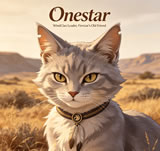
Onestar
The former friend of Firestar who became a fierce defender of WindClan's independence. His complicated legacy divides fans to this day. Read more →
Frequently Asked Questions About WindClan Warrior Cats
Who is the most popular WindClan Warrior Cats leader?
Tallstar is widely considered the most beloved WindClan Warrior Cats leader among fans. His journey from a vengeful warrior to a wise leader, and his friendship with Firestar, made him one of the most respected cats in the entire series.
What makes WindClan Warrior Cats different from other clans?
WindClan Warrior Cats are the fastest runners in the forest, built for open moorland hunting. They're lean, swift, and fiercely independent, with a deep connection to the open sky and rolling hills of their territory.
Who are the most important WindClan Warrior Cats in the series?
The most important WindClan Warrior Cats include Tallstar, Windstar, Onestar, Crowpaw, Mothflight, and Breezepelt. Each played a major role in shaping the clan's history and the broader Warrior Cats storyline.
Why do WindClan Warrior Cats live on the moor?
WindClan chose the moorland because it suited their strengths. The open terrain lets them use their speed to hunt rabbits and escape enemies. While other clans saw the moor as barren and exposed, WindClan saw freedom and opportunity.
What happened between Onestar and Firestar?
Onestar and Firestar were once close friends. But when Onewhisker became Onestar, he started distancing himself from ThunderClan to prove WindClan's independence. Their friendship turned into rivalry, culminating in Onestar's refusal to help ThunderClan during several crises.
Explore More Warrior Cats Content
Love WindClan Warrior Cats? There's plenty more to discover:
- Warrior Cats Name Generator - Create your own Warrior Cats name
- About Us - Learn more about our Warrior Cats fan community
- ThunderClan Warrior Cats - The brave warriors of the forest
- RiverClan Warrior Cats - The graceful swimmers of the river
- Tallstar Warrior Cats - The legendary WindClan leader's full story
- Crowpaw Warrior Cats - The sharp-tongued hero's journey